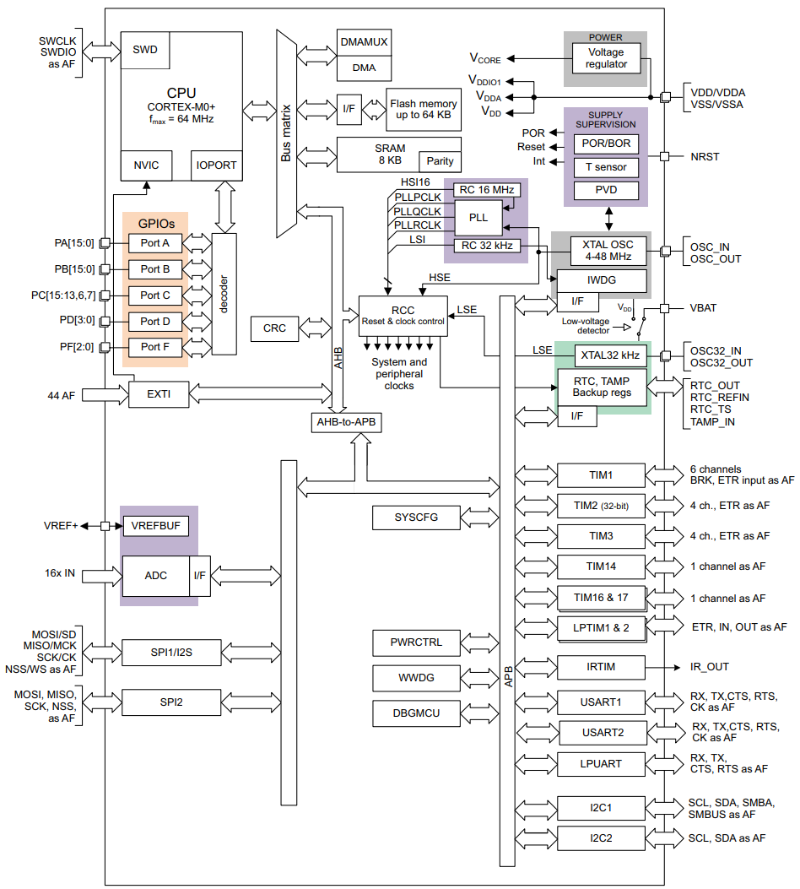
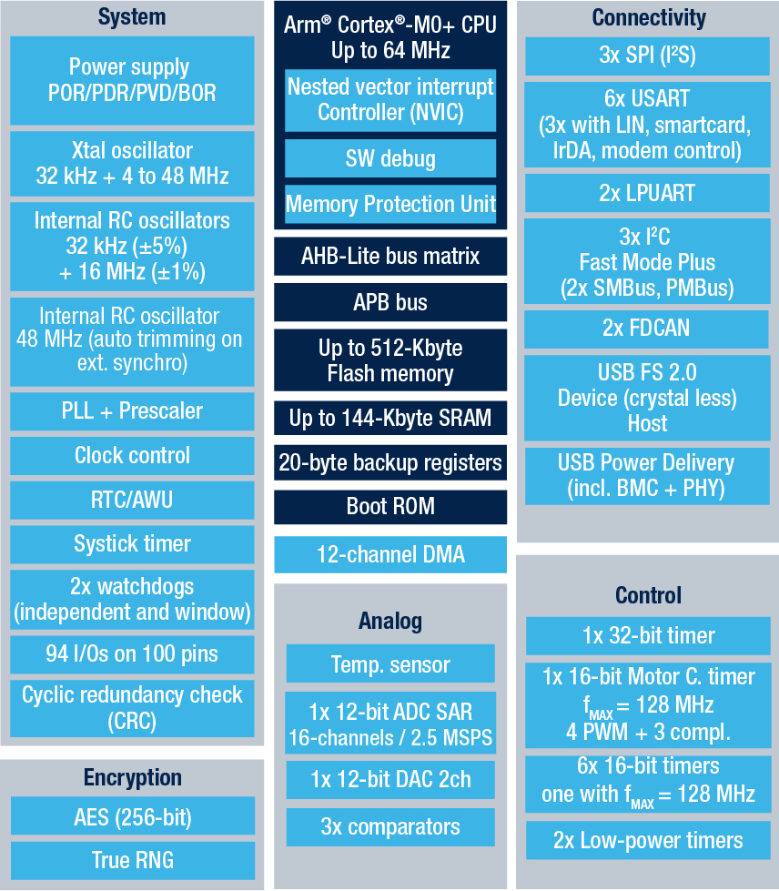
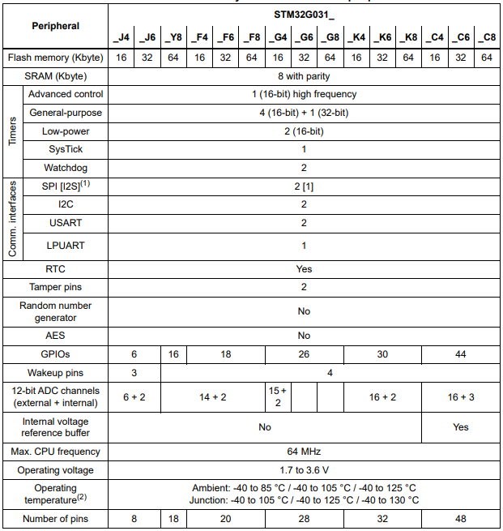

STM32G031¶
Xin简介¶

规格参数¶
基本参数¶
发布时间：
参考价格： ￥6.25
制程工艺：90 nm
供货周期：
封装规格：QFN48/QFN32/QFN28/TSSOP20/SON8
运行环境：-40°C to 105/125°C
RAM容量：8 KB
Flash容量：32/64 KB

特征参数¶
模拟性能¶
12-bit SAR ADC (16ch)
2.5MSPS 12-bit ADC > STM32F429 2.4MSPS 12-bit ADC
芯片架构¶
HSI RC 16 MHz(±1%)
LSI RC 32 kHz(±5%)
功耗参数¶
供电电压: 1.7 to 3.6 V
运行功耗: 100μA/MHz
LPUART¶
LPTIM¶
Xin选择¶
品牌对比¶
STM32G0系列产品，就性能和市场定位而言，十分精准，弥补了STM32F0的性能不足和模拟外设过弱，让低阶MCU同各种SoC芯片相比再次具备竞争力。
系列对比¶
超值系列¶

STM32G071¶
参考价格： ￥8.1
STM32G0C1¶
STM32G0C1是STM32G0系列中配置最齐全，外设最丰富的产品，相对STM32G0B1具有AES256和RNG外设，相对STM32G031系列配置的USB和CAN能够满足常用通信场景，和STM32F1系列功能具有交叠。
型号对比¶
Xin实践¶
STM32G031系列拥有非常丰富的产品规格，目前公开售卖的开发板中最常用的型号为 STM32G031J6 和 STM32G031K8

开发工具¶
使用STM32芯片最直接方式是通过 stm32cube 工具构建基本运行体，不用开发者自己去研究寄存器初始化相应外设（但请注意使能）。
源圈OS-Q验证后整合的开发框架 P215 ，集成了更多可用资源，兼容stm32cube及stm32cubeIDE，作为一个开源编译体系，便于多系统下开发和云端部署。
示例代码¶
基于STM32CubeMX生成HAL库工程
uint8_t RxData; //中断接收串口1数据
void HAL_UART_RxCpltCallback(UART_HandleTypeDef *huart)
{
if(&huart1 == huart) {
HAL_UART_Receive_IT(huart, &RxData, 1);
}
}
void HAL_TIM_PeriodElapsedCallback(TIM_HandleTypeDef *htim)
{
if(htim==(&htim17)) //定时器中断函数
{
g_run_tick++;
}
}
int main(void)
{
/* USER CODE BEGIN 2 */
HAL_UART_Receive_IT(&huart1, &RxData, 1); //中断接收使能
HAL_TIM_PWM_Start(&htim16,TIM_CHANNEL_1); //PWM输出使能
HAL_TIM_Base_Start_IT(&htim17); //定时器使能
/* USER CODE END 2 */
while (1)
{
/* USER CODE BEGIN 3 */
HAL_GPIO_TogglePin(LED_GPIO_Port, LED_Pin);
HAL_Delay(500);
}
/* USER CODE END 3 */
}
开源项目¶
如果你要探索一些开源项目，可能时常遇到基于 PlatformIO 构建的工程，通过跨平台编译，直接在编辑器中集成，可以云端部署，比常用的IDE拥有更多的灵活性。
关于 ST MCU构建的 开源项目 有32000多个(和G0系列相关较少)，其中最主要的类别是arduino，STM32也是arduino的最佳运行平台之一。